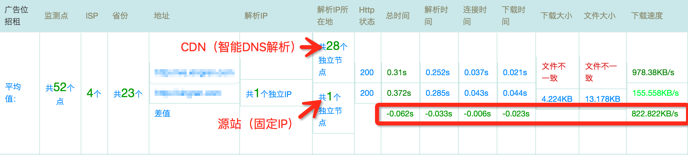
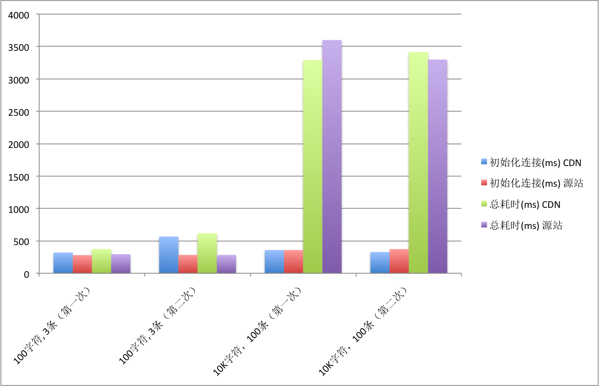

<!DOCTYPE HTML>
<html>
<head><meta name="generator" content="Hexo 3.9.0">
  <meta charset="utf-8">
  <meta http-equiv="X-UA-Compatible" content="IE=edge">
  <meta name="apple-mobile-web-app-capable" content="yes">
  <meta name="apple-mobile-web-app-status-bar-style" content="black">
  <meta name="google-site-verification" content>
  
  <title>【Web】CDN加速效果浅析</title>
  <meta name="author" content="Emac">
   <meta name="description" content="1. 什么是CDN？
CDN的全称是Content Delivery Network，即内容分发网络。其目的是通过在现有的Internet中增加一层新的CACHE(缓存)层，将网站的内容发布到最接近用户的网络”边缘”的节点，使用户可以就近取得所需的内容，提高用户访问网站的响应速度。从技术上全面解决由">
  

  <meta property="og:title" content="【Web】CDN加速效果浅析">
  <meta name="viewport" content="width=device-width, initial-scale=1, maximum-scale=1">
  <meta property="og:site_name" content="Emac">
 <meta property="og:image" content="undefined">
  
  <link href="/apple-touch-icon-precomposed.png" sizes="180x180" rel="apple-touch-icon-precomposed">
  <link rel="alternate" href="/atom.xml" title="Emac" type="application/atom+xml">
  <link rel="stylesheet" href="//cdn.bootcss.com/bootstrap/3.3.6/css/bootstrap.min.css">
  <link rel="stylesheet" href="//cdn.bootcss.com/font-awesome/4.5.0/css/font-awesome.min.css">
  <link rel="stylesheet" href="/css/m.min.css">
  <link rel="icon" type="image/x-icon" href="/favicon.ico">
</head>
</html>
<body>
  <div id='wx_pic' style='display:none;'></div>
  <div id="main">
    <div class="behind">
      <div class="back">
        <a href="/" class="black-color"><i class="fa fa-times" aria-hidden="true"></i></a>
      </div>
      <div class="description">
        &nbsp;拾贝
      </div>
    </div>
    <div class="container">
      

  <article class="standard post">
    <div class="title">
      
  
    <h1 class="page-title center">
        【Web】CDN加速效果浅析
    </h1>
  


    </div>
    <div class="meta center">
      
<time datetime="2016-01-17T16:00:00.000Z">
  <i class="fa fa-calendar"></i>&nbsp;
  2016-01-18
</time>


    
    &nbsp;
    <i class="fa fa-tag"></i>&nbsp;
    <a href="/categories/arch/">arch</a>


    
    &nbsp;
    <i class="fa fa-tag"></i>&nbsp;
    <a href="/tags/原创/">原创</a>·<a href="/tags/性能优化/">性能优化</a>


    </div>
    <hr>
    <div class="picture-container">
      
    </div>
    <h2 id="1-什么是CDN？"><a href="#1-什么是CDN？" class="headerlink" title="1. 什么是CDN？"></a>1. 什么是CDN？</h2><blockquote>
<p>CDN的全称是Content Delivery Network，即内容分发网络。其目的是通过在现有的Internet中增加一层新的CACHE(缓存)层，将网站的内容发布到最接近用户的网络”边缘”的节点，使用户可以就近取得所需的内容，提高用户访问网站的响应速度。从技术上全面解决由于网络带宽小、用户访问量大、网点分布不均等原因，提高用户访问网站的响应速度。<br><a href="http://www.51know.info/system_performance/cdn/cdn.html" target="_blank" rel="noopener">http://www.51know.info/system_performance/cdn/cdn.html</a></p>
</blockquote>
<p>可以认为，CDN就是加上了智能DNS和缓存层的反向代理集群。由于智能DNS能够根据请求的来源定位到离用户较近的缓存服务器，因此有效的缩短了连接时间，而缓存层的存在极大的提高了下载速度，并且不再受限于源站的带宽大小。注意上述第二点仅针对静态资源有意义，对于动态内容（比如POST请求，WebSocket连接），CDN仍然需要将请求发回源站再将结果返回，并不能起到加速作用。下面就针对上述分析进行实验验证。</p>
<h2 id="2-环境准备"><a href="#2-环境准备" class="headerlink" title="2. 环境准备"></a>2. 环境准备</h2><ul>
<li>源站，提供静态页面和WebSocket服务。</li>
<li>CDN，使用腾讯云CDN服务，仅对静态页面设置缓存。</li>
</ul>
<h2 id="3-基准测试"><a href="#3-基准测试" class="headerlink" title="3. 基准测试"></a>3. 基准测试</h2><h3 id="3-1-静态页面"><a href="#3-1-静态页面" class="headerlink" title="3.1 静态页面"></a>3.1 静态页面</h3><p>如下图所示，使用CDN之后，无论是连接时间还是下载时间都明显缩短，下载速度也有<strong>5倍</strong>以上的提速。</p>
<p></p>
<p>测速网站：<a href="http://www.17ce.com/" target="_blank" rel="noopener">http://www.17ce.com/</a></p>
<h3 id="3-2-动态内容"><a href="#3-2-动态内容" class="headerlink" title="3.2 动态内容"></a>3.2 动态内容</h3><p>选择一台远离源站的服务器，运行Node基准测试，先后与源站和CDN站建立WebSocket连接，发送消息，计算总耗时。测试结果显示，与直连源站相比，使用CDN并没有起到加速效果，反而有所下降。不难理解，这是因为去掉缓存之后，CDN平白在用户和源站之间多加了一层链路。</p>
<p></p>
<h2 id="4-参考"><a href="#4-参考" class="headerlink" title="4. 参考"></a>4. 参考</h2><ul>
<li><a href="http://www.51know.info/system_performance/cdn/cdn.html" target="_blank" rel="noopener">http://www.51know.info/system_performance/cdn/cdn.html</a></li>
<li><a href="http://www.qcloud.com/wiki/CDN%E4%BB%8B%E7%BB%8D" target="_blank" rel="noopener">http://www.qcloud.com/wiki/CDN%E4%BB%8B%E7%BB%8D</a></li>
</ul>


  </article>
  </script>


    </div>
  </div>
  <footer class="page-footer"><div class="clearfix">
</div>
<div class="right-foot container">
    <div class="firstrow">
        <a href="#top" >
        <i class="fa fa-arrow-right"></i>
        </a>
        © emacoo.cn 2015-2021
    </div>
    <div class="secondrow">
        <a href="https://github.com/gaoryrt/hexo-theme-pln">
        
        </a>
    </div>
</div>
<div class="clearfix">
</div>
<script async src="//busuanzi.ibruce.info/busuanzi/2.3/busuanzi.pure.mini.js"></script>
<div class="busuanzi center">
    <span id="busuanzi_container_site_pv">本站总访问量<span id="busuanzi_value_site_pv"></span>次</span>
    <span id="busuanzi_container_site_uv">本站访客数<span id="busuanzi_value_site_uv"></span>人次</span>
    <span id="busuanzi_container_page_pv">
      本文总阅读量<span id="busuanzi_value_page_pv"></span>次
    </span>
</div>
</footer>
  <script src="//cdn.bootcss.com/jquery/2.2.1/jquery.min.js"></script>
<script src="/js/search.js"></script>
<script type="text/javascript">

// comments below to disable loading animation
function revealOnScroll() {
  var scrolled = $(window).scrollTop();
  $(".excerpt, .index-title, .index-meta, p").each(function() {
    var current = $(this),
      height = $(window).outerHeight(),
      offsetTop = current.offset().top;
    (scrolled + height + 50 > offsetTop) ? current.addClass("animation"):'';
  });
}
$(window).on("scroll", revealOnScroll);
$(document).ready(revealOnScroll)

// disqus scripts


// dropdown scripts
$(".dropdown").click(function(event) {
  var current = $(this);
  event.stopPropagation();
  $(current).children(".dropdown-content")[($(current).children(".dropdown-content").hasClass("open"))?'removeClass':'addClass']("open")
});
$(document).click(function(){
    $(".dropdown-content").removeClass("open");
})

// back to top scripts
$("a[href='#top']").click(function() {
  $("html, body").animate({ scrollTop: 0 }, 500);
  return false;
});


var path = "/search.xml";
searchFunc(path, 'local-search-input', 'local-search-result');

</script>

</body>
</html>
